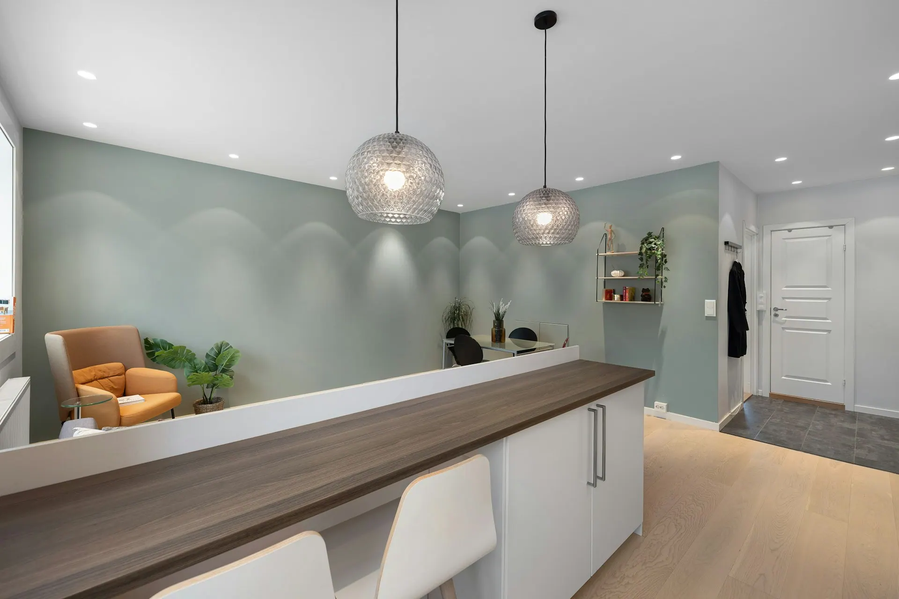
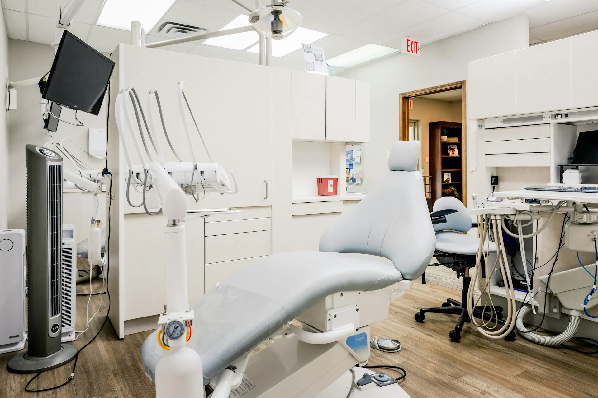
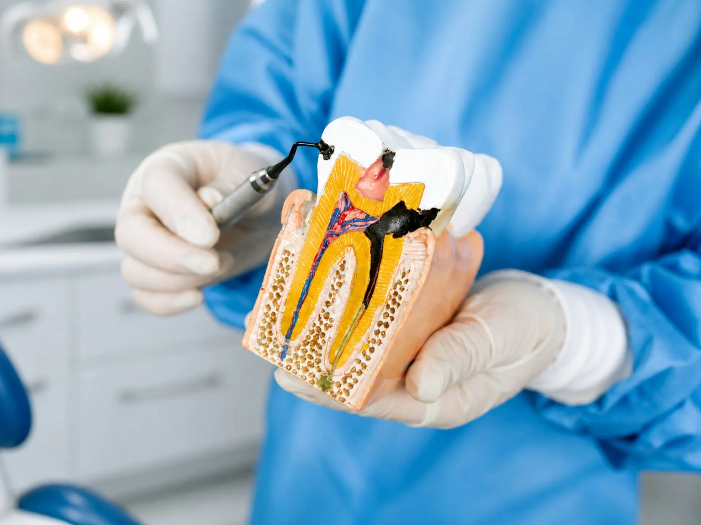
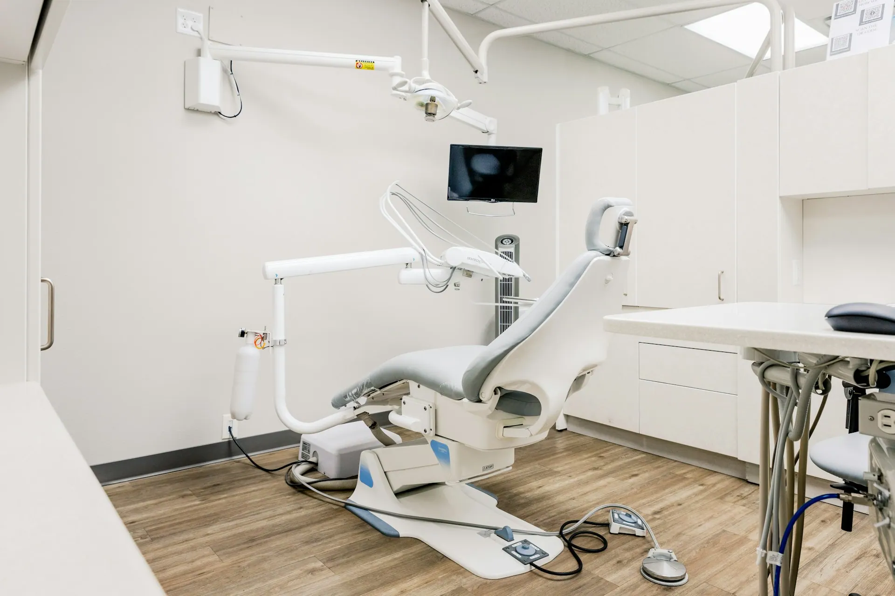

Боялась стоматологов с детства. Здесь всё объяснили на модели, сделали под анестезией — ничего не почувствовала.

Стоматология · Красноярск
Лечим спокойно. Улыбаетесь уверенно.
Стоматология «Перламутр» в центре Красноярска: лечение, гигиена, коронки и импланты. План и цена — до начала лечения. Запись онлайн на удобное время.
01Цены
Услуги и цены
Цены «от» — точную стоимость врач назовёт после осмотра и снимка, до начала лечения.
- Консультация и план леченияОсмотр, снимок, план и сметабесплатно30 мин
- Профессиональная гигиенаУльтразвук, Air Flow, полировкаот 4 500 ₽60 мин
- Лечение кариесаС анестезией и световой пломбойот 3 900 ₽60 мин
- Лечение каналовПод микроскопомот 7 500 ₽90 мин
- Отбеливаниеот 14 000 ₽90 мин
- Коронка из цирконияот 25 000 ₽2 визита
- Имплант под ключот 45 000 ₽по плану
- Удаление зубаот 2 500 ₽40 мин
- Детский приёмДля детей от 3 летот 1 500 ₽30 мин
02Клиника
Светло, тихо, стерильно



03Почему мы
Почему «Перламутр»
- 01
Цена — до начала лечения
После осмотра врач составит план и смету. Без «а ещё нужно доплатить» в кресле.
- 02
Без боли и спешки
Современная анестезия и время на приём с запасом — врач не торопится к следующему пациенту.
- 03
Вся семья — в одной клинике
Лечение, гигиена, протезирование и детский приём: не нужно искать разных врачей.
- 04
Запись без звонков
Выбираете врача и время на сайте, напомним о приёме накануне и за 2 часа.
04Как это работает
От записи до улыбки
- Выбираете врача и время
Свободные окна — на сайте.
- Консультация и план
Осмотр, снимок, смета — бесплатно.
- Лечение по плану
Каждый этап и цена — согласованы заранее.
- Напомним о гигиене
Раз в полгода — чтобы не доводить до лечения.
05Отзывы
4,9 из 5 — что пишут гости
Смету дали до начала, итог совпал до рубля. Записываюсь теперь через сайт.
Водила сына на детский приём — врач нашёл подход, он даже не плакал.
06Вопросы
Частые вопросы
Сколько стоит консультация?
Первичная консультация с осмотром и планом лечения — бесплатно.
Будет больно?
Лечим под современной анестезией. Если волнуетесь — скажите врачу, он объяснит каждый шаг.
Можно ли с детьми?
Да, детский приём — с 3 лет. Записывайтесь к детскому стоматологу.
Как записаться?
На сайте: выберите услугу, врача и время. Запись сразу придёт администратору.
07Контакты
Как нас найти
- Адрес
- ул. Ады Лебедевой, 150, КрасноярскПервый этаж, отдельный вход
- Часы работы
- Пн–Сб9:00–20:00Вс10:00–16:00
- Телефон
- +7 900 000-00-00
ул. Ады Лебедевой, 150, Красноярск